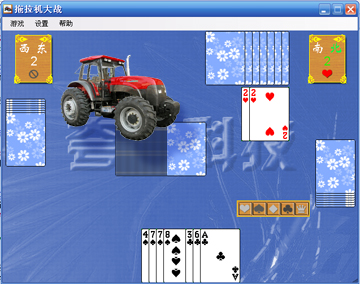

拖拉机介绍
“拖拉机”，又名“双抠”，是一种在中国各地广为流传的扑克游戏，是由著名的扑克牌局 “升级”发展演化而来。和“升级”一样，牌局采用四人结对竞赛，抢分升级的方式进行。基本规则也和“升级”相似。具有规则简明、对抗性强等特点。“拖拉机”在保留“升级”的上述优点的同时，增加了牌的张数（由54张变为108张〕，取消了对底牌压分的限制，使牌局的变化更为丰富。“对牌”、“拖拉机” （这也是“拖拉机”这一游戏名称的由来〕等出牌形式和“双抠翻倍”等规则的增加，使牌局更富有娱乐性和刺激性。
